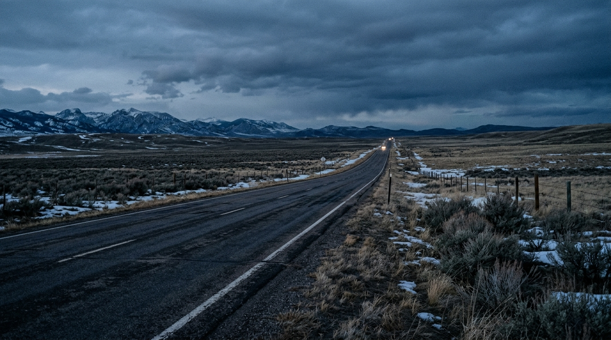
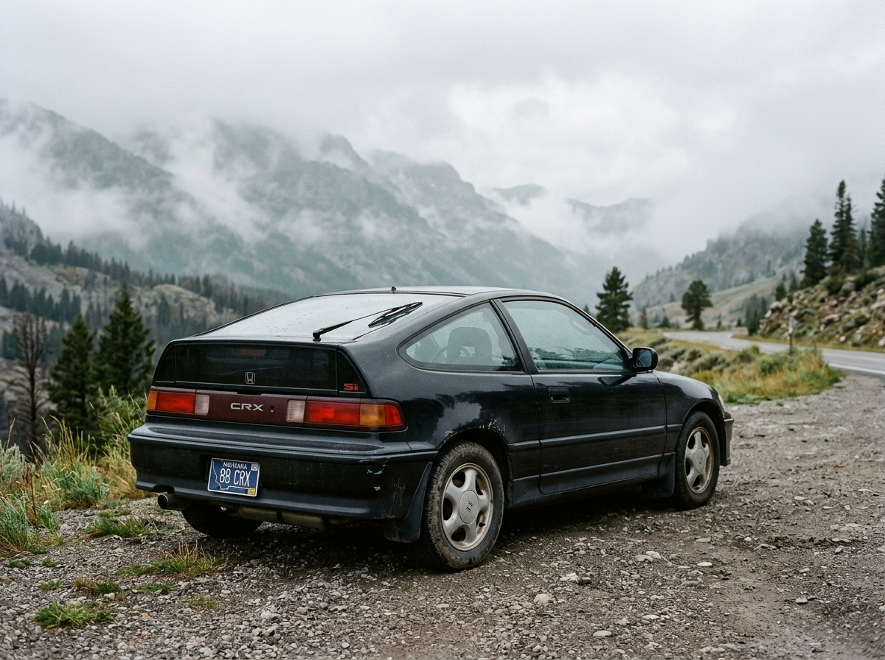
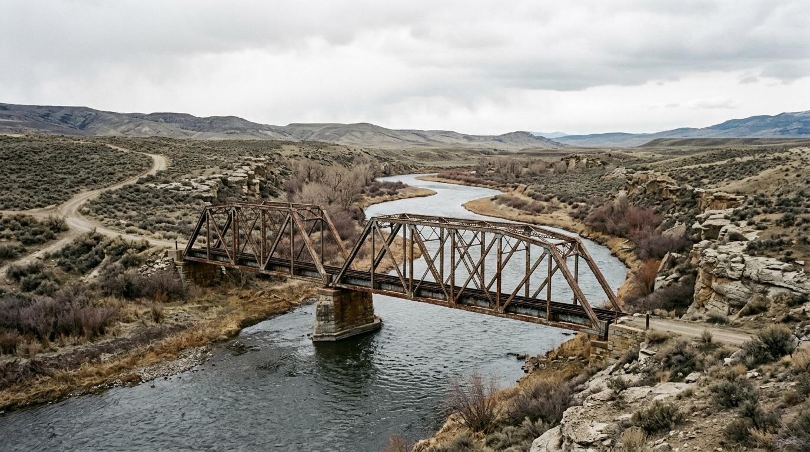

Aufbruch nach Norden über die I-25
Lisa startet in Denver mit ihrem neuen schwarzen Honda CR-X Si und will über Cody nach Billings gelangen. Unterwegs macht sie bei Verwandten Station und setzt die Fahrt in Richtung der Grenze zu Wyoming fort.
Archivdossier Wyoming, 1988–2004 Lisa Marie Kimmell
Im Frühjahr 1988 machte sich die achtzehnjährige Lisa Marie Kimmell von Denver nach Cody auf — in einem schwarzen Honda CR-X Si mit dem persönlichen Kennzeichen „LIL MISS“. Ihr Wagen verschwand vierzehn Jahre lang, bis eine DNA-Analyse auf ein abgelegenes Grundstück im wüstenartigen Moneta hinwies.

01. Fallkontext
Lisa Marie Kimmell wurde am 18. Juli 1969 geboren und wuchs in Billings (Montana) auf. Im Frühjahr 1988 arbeitete sie in Denver (Colorado) und machte sich am Freitag, dem 25. März, auf den Weg nach Cody, wo ihr Freund Ed Yaroch auf sie wartete. In Erinnerung geblieben ist dem ganzen Land der Fall vor allem wegen des schwarzen Coupés Honda CR-X Si mit dem persönlichen Montana-Kennzeichen „LIL MISS“ am Heck — dem Spitznamen, den die Familie für Lisa verwendete.
Spät am Abend des 25. März hielt ein Streifenbeamter der Wyoming Highway Patrol Lisa wegen Geschwindigkeitsüberschreitung nahe Orin Junction an. Die Videoaufzeichnung und das Protokoll dieser Kontrolle sollten der letzte glaubwürdige Nachweis dafür sein, dass die junge Frau noch am Leben war. Bis nach Cody fehlten noch einige Stunden Fahrt über kaum befahrene Fernstraßen, aber dort kam sie nie an.
„Vierzehn Jahre lang meldeten Zeugen von Kalifornien bis Kanada Sichtungen eines schwarzen Autos mit dem Kennzeichen ‘LIL MISS’ — während der Wagen wenige Meilen vom Tatort entfernt in der Erde vergraben lag.“
Am 2. April 1988 entdeckte ein Fischer die Leiche Lisas im eiskalten Wasser des North Platte River nahe der alten Government Bridge südwestlich von Casper. Die gerichtsmedizinische Untersuchung ergab, dass die junge Frau rund sechs Tage lang gefangen gehalten, missbraucht und am Fluss ermordet worden war. Trotz der Folge von Unsolved Mysteries und Tausender überprüfter Hinweise blieb der Fall bis in die Ära der bundesstaatlichen DNA-Datenbank ungeklärt.
02. Chronologie der Ermittlung
Lisa startet in Denver mit ihrem neuen schwarzen Honda CR-X Si und will über Cody nach Billings gelangen. Unterwegs macht sie bei Verwandten Station und setzt die Fahrt in Richtung der Grenze zu Wyoming fort.
Trooper Alan Konechny hält den CR-X bei 88 mph an. Die Papiere werden ohne Zwischenfälle geprüft; die Dashcam hält Lisas Stimme fest — die letzte offizielle Aufnahme, auf der sie lebend zu hören ist.
Die spätere Rekonstruktion ergab, dass Lisa von Dale Wayne Eaton abgefangen und auf sein abgelegenes Grundstück in Moneta gebracht wurde, wo sie etwa sechs Tage lang neben einem alten Schulbus gefangen gehalten wurde.
Ein Fischer entdeckt die Leiche der jungen Frau am Ufer des North Platte River unterhalb der alten Stahlbrücke. Die Ermittler dokumentieren Spuren eines gewaltsamen Todes und Stichverletzungen, doch Lisas Auto ist spurlos verschwunden.
Die Fernsehsendung Unsolved Mysteries macht das Kennzeichen „LIL MISS“ landesweit bekannt. Die Familie Kimmell und die Polizei prüfen Hunderte Meldungen über einen schwarzen Honda CR-X, doch kein einziger Hinweis bestätigt sich.
Die 1988 aufbewahrte biologische Probe wird in das nationale CODIS-System eingespeist. Das Profil stimmt mit der DNA von Dale Wayne Eaton überein, der in Colorado wegen bewaffneten Überfalls eine Haftstrafe verbüßt.
Bei der Durchsuchung des Geländes von Eaton bemerken die Ermittler eine Bodenabsenkung und graben einen tiefen Graben aus. Unter der Erde finden sie Lisas schwarzen Honda CR-X — halbiert, aber mit erhaltenen Schlüsselteilen.
2004 erklärt die Jury Eaton für schuldig und verhängt die Todesstrafe. Die Eltern Lisas erstreiten das Grundstück in Moneta und verbrennen die Gebäude zum Gedenken an ihre Tochter. Später wird die Todesstrafe in eine lebenslange Freiheitsstrafe umgewandelt.
03. Geografie des Falls
Wählen Sie einen Knoten auf der Karte, um Koordinaten, Entfernungen und Ermittlungsbefunde abzugleichen.
39.7392° N, 104.9903° W · 0 Meilen vom Start
Am 25. März 1988 fuhr Lisa Kimmell tagsüber von Denver aus nach Norden über die I-25. Sie wollte in Cody bei ihrem Freund Ed Yaroch vorbeifahren und anschließend zu ihren Eltern nach Billings.
04. Beweisstücke

Inventar-Nr. 01-CRX · 1988 vergraben / 2002 geborgen
Fast anderthalb Jahrzehnte lang ging die Polizei davon aus, dass der Täter das Auto in einen anderen Bundesstaat gebracht oder es als Teileträger verkauft hatte. Tatsächlich grub Dale Eaton mit einem Bagger eine tiefe Grube auf seinem Grundstück in Moneta, zersägte die Karosserie und vergrub das Fahrzeug unter Erdreich.

Inventar-Nr. 02-NPR · Am 2. April 1988 entdeckt
Die kaum genutzte Überführung südwestlich von Casper lag abseits der wichtigsten Touristenrouten. Genau hierhin brachte der Täter die junge Frau sechs Tage nach der Entführung. An diesem Tag half der Wasserstand einem vorbeikommenden Fischer, die Leiche am Ufer zu entdecken.
Inventar-Nr. 03-DNA · CODIS-Treffer, 2002
1988 steckte die DNA-Analyse im US-Strafjustizwesen noch in den Anfängen. Erst 2002 verknüpfte die nationale CODIS-Datenbank die archivierte Probe aus Wyoming mit den Daten des Häftlings Dale Eaton, der eines anderen Verbrechens in Colorado überführt worden war.
05. Gerichtliches Ergebnis und Faktencheck
| Ermittlungsfrage | Frühe Hypothesen (1988–2001) | Vom Gericht festgestellt (2002–2004) |
|---|---|---|
| Das Schicksal des Honda CR-X | Man nahm an, das Auto sei umlackiert oder in einen anderen Bundesstaat gebracht worden; Hunderte „falsche Sichtungen“ des Kennzeichens LIL MISS wurden registriert. | Das Auto verließ Zentral-Wyoming nie: Eaton vergrub es auf seinem eigenen Grundstück in Moneta. |
| Tatort | Vermutet wurde ein zufälliges Treffen an der Straße bei Casper oder eine Entführung auf dem Weg nach Norden direkt nach dem Verkehrsverstoß. | Lisa wurde rund sechs Tage lang in einem abgelegenen Bau (neben einem Schulbus) auf dem Grundstück Eatons in Moneta festgehalten. |
| Identifizierung des Täters | Verdächtigt wurde ein Serienmörder „von den Highways“ ohne Verbindung zu Einwohnern des Fremont County. | Der CODIS-DNA-Treffer von 2002 wies eindeutig auf den einheimischen einsiedlerischen Schweißer Dale Wayne Eaton hin. |
| Gerichtliche Entscheidung und Schicksal des Landes | Jahrelang blieb der Fall ein ungeklärtes Archiv ohne einen einzigen Beschuldigten. | 2004 erklärte die Jury Eaton für schuldig; die Eltern Lisas gewannen die Zivilklage, erhielten das Land in Moneta und verbrannten die Gebäude 2005. |
März 2004
Die Jury des Natrona County sprach Dale Wayne Eaton wegen Mordes ersten Grades mit Überlegung, schwerer Entführung, sexueller Nötigung und Raubes schuldig.
Juli 2005
Ron und Sheila Kimmell, denen das Grundstück Eatons vom Zivilgericht zugesprochen worden war, steckten am 36. Geburtstag Lisas die baufälligen Gebäude in Moneta in Brand — ein symbolischer Abschluss der langjährigen Suche.
2014–2022
Ein Bundesgericht hob das Todesurteil wegen verfahrensrechtlicher Fehler des Verteidigers in der Strafzumessungsphase auf, bestätigte jedoch den Schuldspruch selbst. Das Urteil wurde in eine lebenslange Freiheitsstrafe umgewandelt.